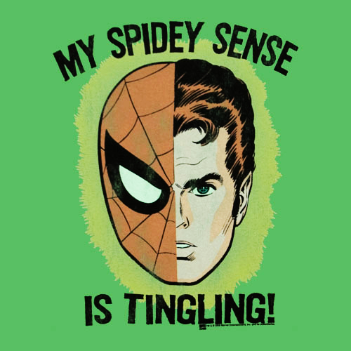

I’d decided to use someone else’s engine, but how would I choose which one?
Background
My last post talked about how I stopped developing my own game engine and game targeting Windows mobile and tablets, and was looking for someone else’s engine to build a game with targeting Android and iOS mobiles, and probably tablets. I was leaving 15 months of work behind to move into more populated marketplaces.
I needed to quickly decide which engines to investigate, how to choose the best fit for my circumstances, and start learning and developing on the chosen engine. My fixed requirement of developing offline during weekday work commutes still stood and would be a major factor in the both the initial shortlist and final choice. This time around I have a solid portable with plenty of space, so engines with heavy footprints could be on the table.
The Shortlist
Unity and Unreal Engine were the obvious giants of the industry to evaluate, and I also knew of Game Maker. I’ve seen lovable games successfully created with all three of these engines. Googling around I saw and discarded a plethora of unsuitable engines due to lack or wrong target platforms, lack of developer and/or community support, lack of features and buggy functionality, etc. One engine that continuously appeared in my research and resisted being discarded was Godot, which became a fourth candidate.
So I ended up with a list of 4 engines to investigate:
- Unity
- Unreal Engine
- Game Maker 2
- Godot 3
The Evaluation Process
I didn’t have the luxury of working through the list one at a time, building something non-trivial to test the capabilities of each engine. Unfortunately I have very limited time available; certainly not enough to spend hours learning multiple engines (as much as I would love to). Up-front research was required so I read a lot of experiences of other people, crawled through multiple forums to gauge community activity, and slowly figured out what about each engine could be applied to my own circumstances. Knowing my eventual choice could lock me in for a number of lengthy projects, I didn’t want to risk wasting time on an engine that wouldn’t stand the test of time.
That didn’t narrow the field at all so I tried to define a requirements list. The current game I plan to build is a top down 2D shooter with quite a few sprites flying around, so the engine needed to accommodate building 2D games and perform well. This knocked Unity and Unreal down a notch because Game Maker and Godot have first class support for 2D while the former two seem to hack 2D from 3D contexts.
Another requirement of mine was a minimal learning curve, considering I would be mainly developing offline. I had to relax this requirement a little because when learning new tools you generally lean on online community support and code samples. I settled for looking at the solution architectures that resulted from using different engines and whether they made sense to me.
I have seen Unreal development in the hands of an expert first hand in the past and I was left feeling the sub-systems didn’t fit together naturally. I was impressed with what I saw in Godot’s SceneTree and node structure, which felt more synergistic and all-encompassing. This seemed more like where my own engine was evolving to and I just felt more comfortable with it. Given I wouldn’t have to shift my thinking much if I went with Godot, it edged out Game Maker and took a slim lead. At this point Godot was shaping up as a real contender, so I began watching Godot tutorials whenever I could to get a feel for the development process while I continued with my evaluation.
I carefully considered how much online support I would need as I developed. To say I’m completely offline while developing is not entirely true; I do whip out my phone and use a data plan to browse for solutions to specific problems when I need to. However phone plans in Australia are notoriously expensive (and mine is no different), so I didn’t want to use my mobile as a hot-spot for downloading large assets from in-built asset stores. This took Unity down another notch, and I began to sour on the idea of going with the bigger engines altogether.
I did a broad-sweeping analysis of the community collaboration channels supporting the various engines. Unsurprisingly there was huge amount support for Unity and to some extent Unreal, but I found examples of different issue resolutions to the same problem depending on major and minor version releases. This brittleness sent my spidey-sense tingling, because if I had to research something online I would need to find the right solution fast and not be caught out by version issues.

Finally I looked at financial costs. There were a variety of concerns thrown by all engines, from initial outlay costs, to costs for purchasable modules through stores, to costs for building on target platforms, to shares of revenue for successful games that crossed income thresholds. Apart from initial cost outlay, there seemed a number of imaginative ways to extract money from developers for services. I don’t have too much of a problem with that, but for an indie developer like me just starting out I felt any money I made would be paid for in blood and sweat, and I didn’t feel like handing over any cash just yet. Godot won this category by a long shot, being free to use, free to deploy, and with a licencing model that pretty much guaranteed the free model would remain throughout the life of the product.
Putting all this together there was a clear winner; Godot was the best match for my circumstances with air visible between it and it’s next competitor (Game Maker).
Due Diligence
I wasn’t quite ready to jump on in however. Choosing an engine was one thing, but now I just something to scrutinise to see if it really would be the right fit for me.
My biggest concern was the offline aspect of my development process. Godot hosts online documentation as a static website, which allowed me to scrape it using a website copier like WebHTTrack and hosting it rendering it offline locally. The documentation source is also available to allow community submissions and language translations; another positive for community engagement. This would help if when needed to search the “online” docs while offline (search in static websites online is still generally implemented as an online service).
Further, Godot also employs a built-in help system Godot with context-sensitivity and search features. This earned it another big tick from me.
My next concern was feature support. At the time version 3 was relatively new and is a full rewrite. Where Godot 2 was feature rich and complete enough to be fit for purpose, I had to assure myself that version 3 had ported enough features to allow me to get started. Fortunately it seemed so, and had been around long enough that some fantastic tutorial content from people like Kids Can Code and GDQuest had already been made to teach Godot 3. Community efforts like this showed that version 3 was already in a great state to start my development project.
My final concern was to find out about the development of the Godot 3 engine itself. Would the small dedicated development team and enthusiastic community contributors be able to port and create stable features at a reasonable pace, or was there a possibility I could “catch up” and need features from the engine before they had completed? My concern was easily dismissed; the team behind Godot had just secured enough Patreon funding to pay their team full time, and between the time I discovered this fact and the time of writing I’ve been really impressed at the speed which features are emerging, how the operation is being run, and how transparent the team is about progress via social media such as blog posts and Twitter.
My Choice
There was no doubt at this point; Godot 3 was a clear winner and would be the engine I would build my game with.
The only lingering doubts I had was whether I could make the leap between using my own engine (which I knew intimately) and using somebody else’s (which I was pretty clueless on how to work at this point). I wouldn’t find out until I tried it out…it was time to get back to development.
If you want to know more about what I’ve been working on, check out my #zodproj posts on Twitter or read through my previous blog posts.